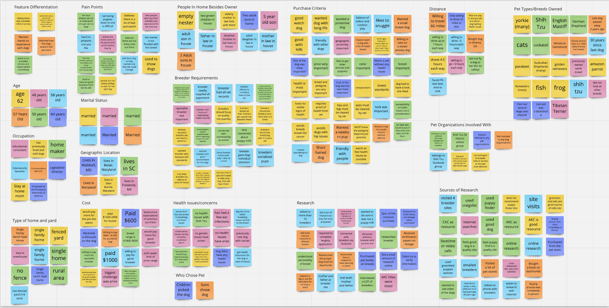
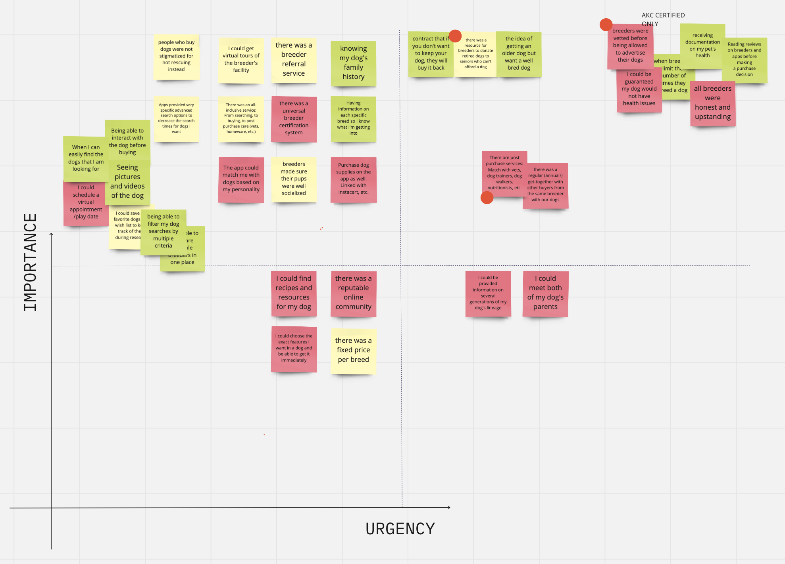
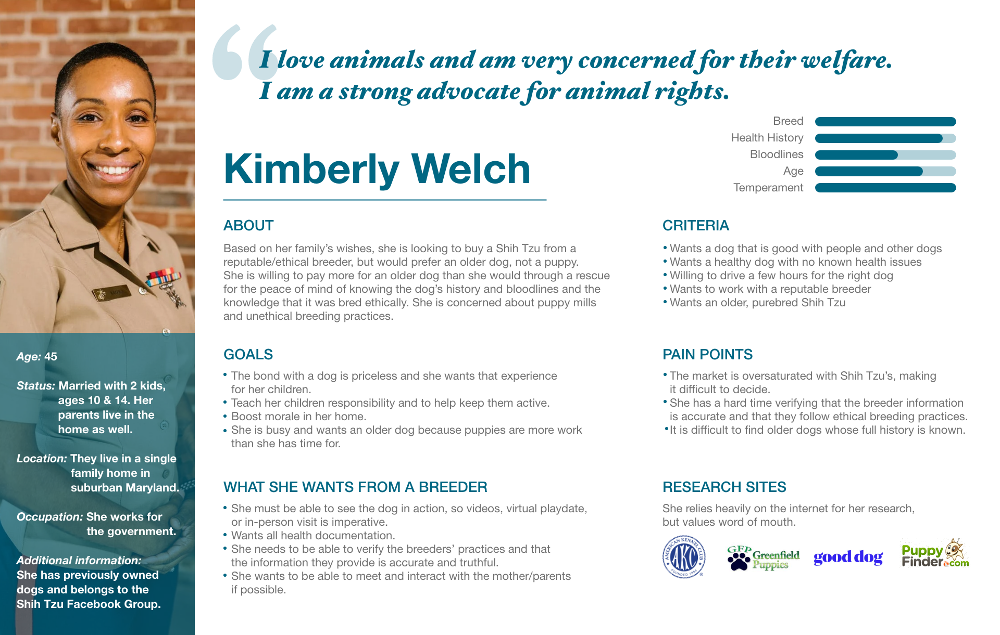
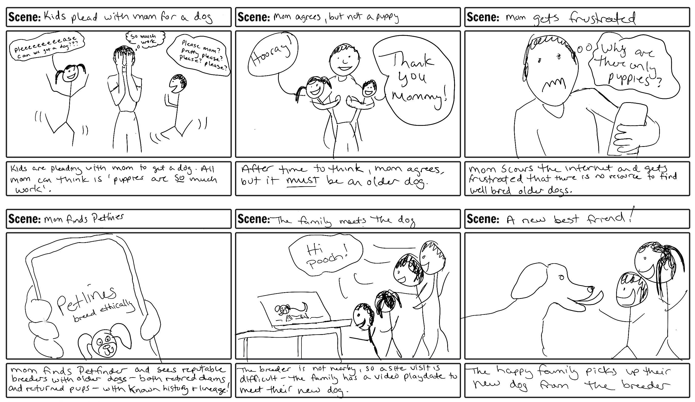
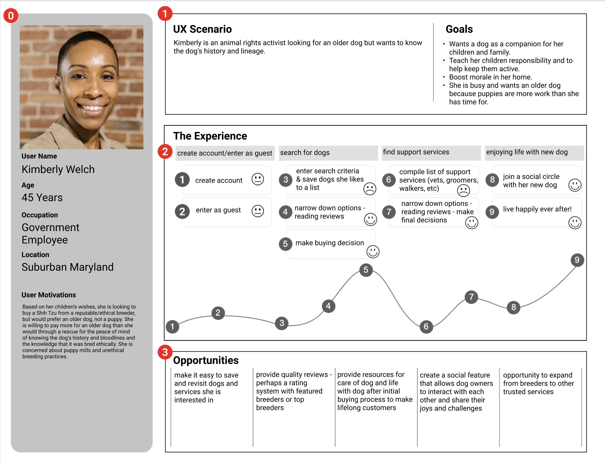
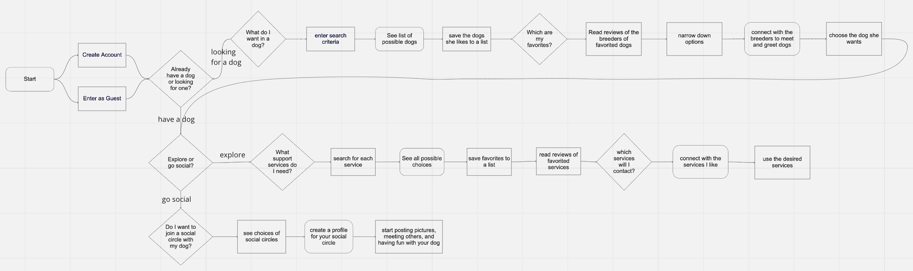
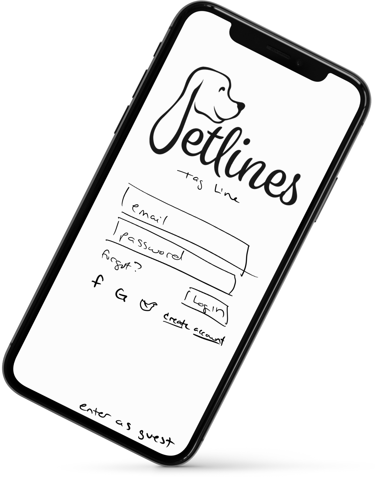
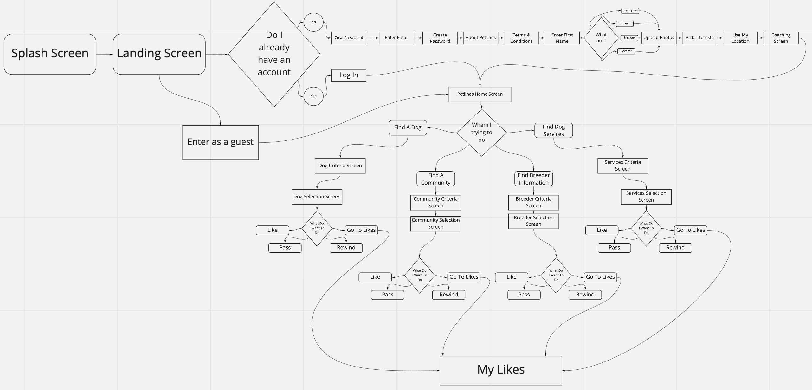

THE FREDERICK CENTER WEBSITE REDESIGN (prototype)
The Frederick Center website provides a wealth of resources and programs for the LGBTQ+ community in the Frederick, MD area, but users struggle to find the information they need and to register for programs, make donations, or volunteer, making users leave the site before completing their desired transactions.
UX/UI TEAM
Alexandria Daley, Michele Foshee, Karla Pérez
OUR SOLUTION
Why Petlines?
We are providing a resource for dog buyers to learn about blood lines, health history, and breeding practices so they can make educated decisions in choosing which dog will be their best companion and the services that go along with dog ownership.
To accomplish this, we started with one overarching question: How might we build a pet research application that helps facilitate educated buying decisions for potential pet owners and finding services for successful dog ownership in order to help ensure that dogs are being bred ethically and that consumers can be confident in their purchase?
INITIAL RESEARCH & ANALYSISBACK TO TOP
At the discovery phase of this project, we conducted both quantitative and qualitative research in the form of six user interviews and multiple social media polls in order to better understand the needs and desires of our users.
Our participants were individuals who were considering purchasing a dog or have purchased a dog in the past. These individuals helped us identify concerns of buyers wanting to make informed decisions to get a healthy, quality pet.
Affinity Diagram
Using the insights from our user interviews, we created an affinity diagram to better understand and organize the data we collected.
Feature Prioritization Matrix
We then used those insights to create a feature prioritization matrix to help us visualize and prioritize our findings.
User Persona
Using our research, we developed the following user persona.
Storyboard
Our user, Kimberly discovers Petlines.
User Journey
Then we follow Kimberly's journey through Petlines to find her perfect companion.
User Insight
What did we find?
Kimberly is a busy working mother who feels strongly about animal rights needs to feel confident that the practices of the breeder she buys her dog from are ethical because she knows that there are breeders who overbreed their dogs, don’t release accurate health information, and sell dogs who may be unhealthy or diseased.
During user interviews and online surveys, we discovered that pet buyers are very concerned about ethical breeding practices and general well-being of their dogs.
Therefore, we believe that pet buyers need a reliable source to vet the breeders they are buying from, whether it is a puppy or an older dog, and that we might be able to help if we provide and all-inclusive experience detailing bloodlines, breeder history, breeder practices, treatment of dogs after they are retired from breeding, and resources to buy and care for older dogs.
We might do this by providing an ethical breeder referral service and a service that rehomes retired and returned dogs and allows buyers to interact with potential pets virtually or in person before committing to purchase. Doing this will allow our product to differentiate from other petfinder apps on the market today and insure the continuation of ethical breeding practices, healthy bloodlines, and homes for the less in demand older dogs.
Competitor Analysis
We conducted a competitor analysis and found that AKC, Animal Direct, Petland USA, Good Dog, and Puppyspot all advertised dogs either from breeders or from shelters/rescues, but none seemed to address what happens with mother dogs after they are finished raising puppies, resources for pet ownership after purchase, and a community network to share ideas and experiences.
PrototypingBACK TO TOP
User Flow
To begin the prototyping phase, we created a user flow.
Sketches
Based on the initial user flow, we created sketches and tested the flow in an interactive InVision protoype.
What did we find?
- We needed a landing page to draw users in.
- Our users needed to flow to different paths earlier in the process.
- Our users wanted more information in the onboarding process.

Iterated User Flow
Our user testing led to the following changes in our user flow before moving on to higher fidelity prototypes.
User Testing & IterationsBACK TO TOP
We conducted an additional four user tests to learn what improvements were necessary before moving on to the high fidelity prototype.
What did we find?
- Users would frequently enter email & password on login screen thinking they were creating an account.
- Coaching screen was on a delay which went by very quickly. Users that were not familiar with similar apps did not understand the swipe functionality.
- Some overlays were not working as intended.
- We need to add a back button to make it easier to navigate between screens.
- Users did not understand purpose of the app.
- Text was too small in places.
Our many rounds of user testing and iterations led us to the final protoype. Explore it here, or enlarge it to get the full effect!